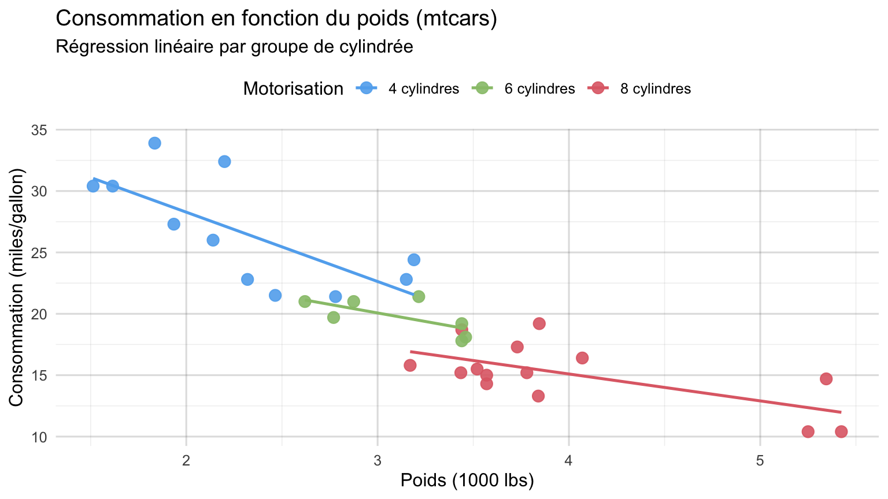

data(mtcars)
df_cars <- mtcars |>
mutate(
Modele = rownames(mtcars),
Cylindres = factor(cyl, labels = c("4 cylindres", "6 cylindres", "8 cylindres")),
Transmission = factor(am, labels = c("Automatique", "Manuelle"))
)
df_resume <- df_cars |>
group_by(Cylindres, Transmission) |>
summarise(
Effectif = n(),
MPG_Moyen = round(mean(mpg), 1),
MPG_SD = round(sd(mpg), 1),
Poids_Moyen = round(mean(wt), 2),
Puissance_Moyenne = round(mean(hp), 0),
.groups = "drop"
)Analyse statistique du jeu de données mtcars
Exemple de rendu Article (HTML et DOCX)
1 Résumé
Ce document illustre le rendu d’un article complet (formats HTML et DOCX) exclusivement basé sur le jeu de données standard mtcars. Nous analysons la relation entre la consommation de carburant (mpg), le poids (wt), la puissance (hp) et le nombre de cylindres (cyl).
2 Introduction
Le jeu de données mtcars regroupe les caractéristiques techniques de 32 modèles d’automobiles. Il permet d’illustrer la mise en forme des tableaux, des équations mathématiques, des encadrés et des graphiques 2D et 3D interactifs adaptatifs en thème clair et sombre (One Dark Pro).
NoteVariable d’intérêt principale
La consommation est exprimée en miles par gallon (mpg) et comparée selon l’architecture moteur (4, 6 ou 8 cylindres) et le type de transmission (am).
3 Méthodes
3.1 Modèle linéaire
Nous considérons le modèle de régression linéaire multiple reliant la consommation mpg au poids wt et à la puissance hp :
\[ \text{mpg}_i = \beta_0 + \beta_1 \cdot \text{wt}_i + \beta_2 \cdot \text{hp}_i + \varepsilon_i \]
3.2 Préparation des données
4 Résultats
4.1 Synthèse descriptive par groupe
Le Tableau 1 résume les caractéristiques moyennes des véhicules selon le nombre de cylindres et le type de boîte de vitesses.
if (requireNamespace("gt", quietly = TRUE)) {
df_resume |>
gt::gt() |>
gt::cols_label(
Cylindres = "Motorisation",
Transmission = "Transmission",
Effectif = "n",
MPG_Moyen = "MPG moyen",
MPG_SD = "Écart-type MPG",
Poids_Moyen = "Poids moyen (1000 lbs)",
Puissance_Moyenne = "Puissance (hp)"
) |>
gt::tab_header(
title = "Synthèse descriptive mtcars"
)
} else {
knitr::kable(
df_resume,
col.names = c("Motorisation", "Transmission", "n", "MPG moyen", "ET MPG", "Poids moyen", "Puissance (hp)")
)
}| Synthèse descriptive mtcars | ||||||
| Motorisation | Transmission | n | MPG moyen | Écart-type MPG | Poids moyen (1000 lbs) | Puissance (hp) |
|---|---|---|---|---|---|---|
| 4 cylindres | Automatique | 3 | 22.9 | 1.5 | 2.94 | 85 |
| 4 cylindres | Manuelle | 8 | 28.1 | 4.5 | 2.04 | 82 |
| 6 cylindres | Automatique | 4 | 19.1 | 1.6 | 3.39 | 115 |
| 6 cylindres | Manuelle | 3 | 20.6 | 0.8 | 2.76 | 132 |
| 8 cylindres | Automatique | 12 | 15.1 | 2.8 | 4.10 | 194 |
| 8 cylindres | Manuelle | 2 | 15.4 | 0.6 | 3.37 | 300 |
4.2 Relation entre poids et consommation
La Figure 1 illustre la diminution de la consommation (mpg) en fonction du poids (wt) et du nombre de cylindres. Le fond transparent et la palette One Dark Pro sont appliqués automatiquement par auto_dark_on().
ggplot(df_cars, aes(x = wt, y = mpg, color = Cylindres)) +
geom_point(size = 3.2, alpha = 0.9) +
geom_smooth(method = "lm", se = FALSE, linewidth = 0.9) +
labs(
title = "Consommation en fonction du poids (mtcars)",
subtitle = "Régression linéaire par groupe de cylindrée",
x = "Poids (1000 lbs)",
y = "Consommation (miles/gallon)",
color = "Motorisation"
) +
theme_minimal(base_size = 12) +
theme(legend.position = "top")
4.3 Visualisations 3D interactives (R et Python)
En format HTML, les graphiques 3D interactifs produits avec plotly en R comme en Python adoptent automatiquement un fond transparent et la palette One Dark Pro via auto_dark_on().
4.3.1 Nuage 3D interactif dans R (plotly::plot_ly)
library(plotly)
plot_ly(
data = df_cars,
x = ~wt,
y = ~hp,
z = ~mpg,
color = ~Cylindres,
text = ~Modele,
type = "scatter3d",
mode = "markers",
marker = list(size = 6, opacity = 0.9),
height = 480
) |>
layout(
title = "Relation 3D Poids - Puissance - Consommation (R / plotly)",
scene = list(
xaxis = list(title = "Poids (1000 lbs)"),
yaxis = list(title = "Puissance (hp)"),
zaxis = list(title = "Consommation (mpg)")
)
)4.3.2 Nuage 3D interactif dans Python (plotly.express.scatter_3d)
import plotly.express as px
df_py = r.df_cars.copy()
fig_py = px.scatter_3d(
df_py,
x="wt",
y="hp",
z="mpg",
color="Cylindres",
hover_name="Modele",
title="Relation 3D Poids - Puissance - Consommation (Python / plotly.express)",
labels={
"wt": "Poids (1000 lbs)",
"hp": "Puissance (hp)",
"mpg": "Consommation (mpg)",
"Cylindres": "Motorisation"
},
height=480
).update_traces(marker=dict(size=6, opacity=0.9))
fig_py5 Discussion
L’analyse descriptive et graphique de mtcars met en évidence l’effet conjoint de la masse du véhicule et de la cylindrée sur la consommation.
AstuceReproductibilité
Ce document utilise uniquement le jeu de données interne mtcars de R, sans dépendance à des données externes.
6 Conclusion
Cet exemple présente les fonctionnalités de mise en page HTML et Word DOCX du template sur le jeu de données mtcars.